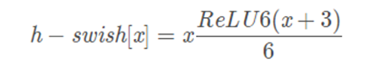

Light-weight
SqueezeNet (Alexnet)
1.1 Architecture
1.2 key words
1.2.1 architectural design strategies
1.2.1.1 replace 3x3 filters with 1x1 filters
1.2.1.2 decrease the number of input channels to 3x3 filters
1.2.1.3 downsample late in the network so the conv layers have larger activation maps
1.2.2 fire model
1.2.2.1 squeeze
filter : 1x1
target: decrease the number of channel
1.2.2.2 expand
filter : 1x1 & 3x3
target: extract the feature map and replace 3x3 filters with 1x1 filters
MobileNet (Convolution)
2.1 Architecture
2.2 Key word
2.2.1 depthwise separable convolution
2.2.1.1 depthwise convolution
2.2.1.2 pointwise convolution
2.2.1.3 Calculated amount
Normal conv:
depthwise conv:
pointwise conv:
2.2.1.4 Compared
2.2.2 Compress parameters
The number of the filters *=α (0.25, 0.5, 0.75)
ShuffleNet (ResNet)
3.1 Architecture
作用：分组卷积防止边缘效应
方式：矩阵转置

3.2 key words
3.2.1 Group conv
Traditional conv
Group conv
3.2.2 Channel Shuffle for Group Convolutions
(1) Input channel: g*n
(2) Reshape(g*n)
(3) Transpose(n*g)
(4) Flatten
Mobilenet v2
4.1 key word
Linear Bottleneck, Inverted Residual Blocks
4.2 Linear Bottleneck( v1, v2 )
4.2.1 V2 在 DW 卷积之前新加了一个 PW 卷积
这么做的原因，是因为 DW 卷积由于本身的计算特性决定它自己没有改变通道数的能力，上一层给它多少通道，它就只能输出多少通道。所以如果上一层给的通道数本身很少的话，DW 也只能很委屈的在低维空间提特征，因此效果不够好。现在 V2 为了改善这个问题，给每个 DW 之前都配备了一个 PW，专门用来升维，定义升维系数t，这样不管输入通道数Cin是多是少，经过第一个 PW 升维之后，DW 都是在相对的更高维t*Cin进行着辛勤工作的。
4.2.2 V2 去掉了第二个 PW 的激活函数
论文作者称其为 Linear Bottleneck。这么做的原因，是因为作者认为激活函数在高维空间能够有效的增加非线性，而在低维空间时则会破坏特征，不如线性的效果好。由于第二个 PW 的主要功能就是降维，因此按照上面的理论，降维之后就不宜再使用 ReLU6 了。
4.3 Inverted Residual Blocks( Resnet, v2 )
4.3.1 ResNet 使用 标准卷积 提特征，MobileNet v2始终使用 DW卷积 提特征。
4.3.2 ResNet 先降维 (0.25倍)、卷积、再升维，而 MobileNet V2 则是 先升维 (6倍)、卷积、再降维。直观的形象上来看，ResNet 的微结构是沙漏形，而 MobileNet V2 则是纺锤形，刚好相反。因此论文作者将 MobileNet V2 的结构称为 Inverted Residual Block。这么做也是因为使用DW卷积而作的适配，希望特征提取能够在高维进行。
MobileNet v3
5.1 Motivation
MobileNetV1 深度可分离卷积
MobileNetV2 线性瓶颈的倒残差结构
MnasNet 基于squeeze and excitation结构的轻量级注意力模型
5.2 网络结构
platform-aware NAS 在计算和参数量受限的前提下搜索网络的各个模块
NetAdapt 对各个模块确定之后网络层的微调，主要是确定每层的filter数量
5.3 网络优化
5.3.1 手工设计
5.3.2 激活函数

shuffleNet v2
6.1 key word
MAC(Memory Access Cost), GPU并行性
6.2 motivation
之前论文FLOPs作为评估一个模型的性能指标，但是在ShuffleNet v2的论文中作者指出这个指标是间接的，因为一个模型实际的运行时间除了要把计算操作算进去之外，还有例如内存读写，GPU并行性，文件IO等也应该考虑进去。最直接的方案还应该回归到最原始的策略，即直接在同一个硬件上观察每个模型的运行时间。如图4所示，在整个模型的计算周期中，FLOPs耗时仅占50%左右，如果我们能优化另外50%，我们就能够在不损失计算量的前提下进一步提高模型的效率。
6.3 高效模型的设计准则
6.3.1 当输入通道数和输出通道数相同时，MAC最小
6.3.2 MAC与分组数量g成正比
6.3.3 网络的分支数量降低并行能力
如图4所示，通过控制卷积的通道数来使5组对照试验的FLOPs相同，通过实验我们发现它们按效率从高到低排列依次是 (a) > (b) > (d) > (c) > (e)
6.3.4 Element-wise操作是非常耗时的
之前论文在计算FLOPs时往往只考虑卷积中的乘法操作，但是一些Element-wise操作（例如ReLU激活，偏置，单位加等）往往被忽略掉。作者指出这些Element-wise操作看似数量很少，但它对模型的速度影响非常大。尤其是深度可分离卷积这种MAC/FLOPs比值较高的算法。图5中统计了ShuffleNet v1和MobileNet v2中各个操作在GPU和ARM上的消耗时间占比。
6.4 Architecture
(1) 在(c)中ShuffleNet v2使用了一个通道分割（Channel Split）操作。这个操作非常简单，即将 c 个输入Feature分成 c1 和 c2 两组，一般情况下 c1 = c2 。这种设计是为了尽量控制分支数，为了满足G3。
(2) 在分割之后的两个分支，左侧是一个直接映射，右侧是一个输入通道数和输出通道数均相同的深度可分离卷积，为了满足G1。
(3) 在右侧的卷积中， 1*1 卷积并没有使用分组卷积，为了满足G2。
(4) 最后在合并的时候均是使用拼接操作，为了满足G4。
(5) 在堆叠ShuffleNet v2的时候，通道拼接，通道洗牌和通道分割可以合并成1个element-wise操作，也是为了满足G4。